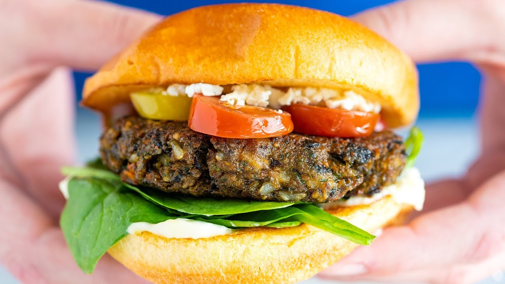

Veggie Burgers

Ingredients
- 1 can pinto beans, drained and rinsed
- 1 chopped onion
- 1 cup of cooked brown rice
- 1 cup of raw almonds
- 1 cup of raw cashews
- 250 grams of chopped mushrooms
- 1 can of black olives
- 1 large clove of garlic
- 1 cup of Parmesan cheese
- 1 lightly beaten egg
- 1/4 cup of ground flaxseed
- 1 teaspoon of vegetable bouillon base
- 1 das of Worcstershire sauce
Steps
- Process pinto beans, onion, brown rice, almonds, cashews, mushrooms, black olives, and garlic in batches in a food processor until completely chopped; transfer to a large mixing bowl.
- Mix Parmesan cheese, egg, flaxseed, vegetable bouillon, and Worcestershire sauce into the bean mixture. Cover bowl with plastic wrap and refrigerate for 1 hour.
- Preheat oven to 375 degrees F (190 degrees C).
- Form bean mixture into 12 patties and arrange onto a non-stick baking sheet.
- Bake burgers in preheated oven for 10 minutes, turn, and continue baking until cooked through, about 10 minutes more.
- Heat a skillet over medium heat. Cook burgers in hot skillet until browned, 3 to 5 minutes per side.